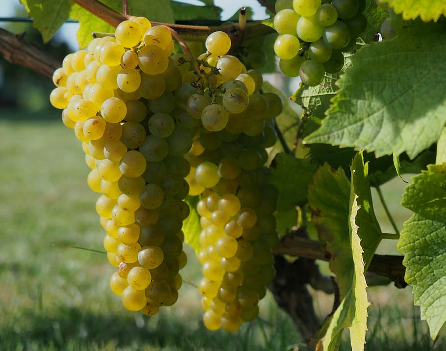

- Eit norsk eventyr -

Solarisdrua er godt eigna i norske forhold. Den modnar tidleg,
er kuldeherdig, motstandsdyktig mot sjukdomar og lagar smakfulle druer.
I slekt med den meir kjente Riesling.
Tida er inne for store endringar for å skape eit bærekraftig samfunn, lokalt og
globalt. Eijos visjon er å skape sunne og deilige mat- og drikkevarer for kunden,
som er profitabelt for bonden og godt for naturen. For å skape verkeleg bærekraftig
varig endring må me kombinere lønnsomheit med bærekraft. Det ynskjer me å kunne vise
er mogleg.